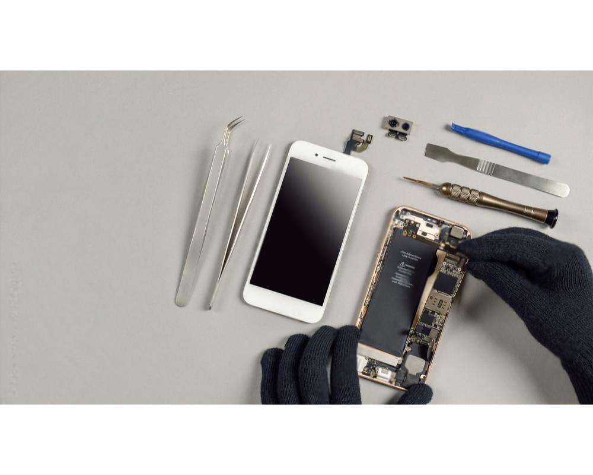

Kompiuteriu remontas | Kompiuteriu remontas vilnius | Kompiuteriu remontas vilniuje | kompu remontas | kompiuteriu tvarkymas | kompiuteriu tvarkymas vilnius | kompiuteriu tvarkymas vilniuje | nesiojimu kompiuteriu remontas | stacionariu kompiuteriu remontas | kompiuteriu servisas | senu kompiuteriu taisymas | kompiuteriu remonto darbai | kompiuterio remonto paslaugos | Kompiuteriu surinkimas | kompiuteriu surinkimas pagal uzsakyma | kompiuterio surinkimas vilnius | kompiuteriu surinkimas vilniuje | surenkame kompiuterius | senu kompiuteriu surinkimas | galingu kompiuteriu surinkimas | kompiuterio surinkimas is senu daliu | kompiuteriu supirkimas | senu kompiuteriu supirkimas vilnius | kompiuteriu supirkimas vilnius | kompu supirkimas | kompiuteriu daliu supirkimas | stacionariu kompiuteriu supirkimas | nesiojamu kompiuteriu supirkimas | naudotu kompiuteriu supirkimas | apple kompiuteriu supirkimas | windows kompiuteriu supirkimas | telefonu remontas | telefonu taisykla vilnius | telefonu taisymas | telefonu remontas vilnius | telefonu remontas vilniuje | telefonu remontas Kalvarijų g. 2 | Vilnius | samsung telefonu remontas vilnius | apple telefonu remontas vilnius | samsung telefonu remontas Kalvarijų g. 2 | apple telefonu remontas Kalvarijų g. 2 | mobiliuju telefonu remontas | iphone telefonu remontas | skubus telefonu remontas | garantinis telefonu remontas | telefono ekrano keitimas | Planšečių remontas | planseciu remontas vilnius | planseciu remontas vilniuje | samsung plansetes remontas | plansetes ekrano keitimas kaina | apple plansetes taisymas Kalvarijų g. 2 | samsung plansetes remontas | planseciu taisymas vilnius | android planseciu taisymas Kalvarijų g. 2
IT112.lt – jūsų patikimas elektronikos remonto partneris. Siūlome profesionalias planšečių, kompiuterių ir telefonų taisymo paslaugas, kad Jūsų įrenginiai veiktų be priekaištų. Patogiai atliekamas kompiuterių supirkimas suteikia galimybę atnaujinti seną įrangą. Be to, pas mus galite užsakyti kompiuterių surinkimo paslaugas – tai idealus pasirinkimas tiems, kurie nori asmeniškai pritaikytą kompiuterį pagal savo poreikius. Apsilankykite it112.lt ir atraskite patikimą sprendimą visiems Jūsų elektronikos iššūkiams!
SHOP 
kompu remontas
Šiandienos technologijų amžiuje asmeninis kompiuteris yra neatsiejama mūsų kasdienybės dalis tiek darbe, tiek namuose. Vis dėlto, ne visi žino, kaip pasirinkti ir surinkti kompiuterines dalis taip, kad galutinis rezultatas atitiktų visus asmeninius poreikius. Čia į pagalbą ateina it112.lt – profesionalų komanda, kurios specializacija yra kompiuterių surinkimas.Pasirinkę it112.lt, klientai gauna ne tik techninę ekspertizę, bet ir personalizuotą aptarnavimą. Įmonė siūlo visapusišką paslaugų paketą, pradedant nuo kliento poreikių analizės ir baigiant pilnu kompiuterio surinkimu. Šis procesas apima ne tik fizinius komponentus, bet ir programinės įrangos diegimą bei sistemų testavimą, užtikrinant, kad kompiuteris veiktų sklandžiai ir efektyviai nuo pat pirmos įjungimo akimirkos.
galingu kompiuteriu surinkimas
Šiandieniniame technologijų amžiuje, kur kompiuteris tapo neatsiejama mūsų darbo, mokymosi ir laisvalaikio dalimi, jo veikimo efektyvumas yra labai svarbus. Būtent todėl įmonė it112.lt siūlo jums paslaugą, kuri ne tik atitiks, bet ir viršys jūsų lūkesčius – galingų kompiuterių surinkimą.Kompiuterio surinkimas – tai ne vien techninis procesas, tai menas. Kiekvienas detalės pasirinkimas ir jos suderinamumas su kitomis komponentėmis lemia galutinį įrenginio našumą. it112.lt komanda, turinti ilgametę patirtį šioje srityje, yra pasirengusi sukurti įrenginį, kuris pribloškia savo galimybėmis.
mobiliuju telefonu remontas
Šiuolaikinėje technologijų eroje mobilusis telefonas tapo neatsiejama mūsų kasdienio gyvenimo dalimi. Deja, įrenginiai kartais sugenda ar patiria technines problemas. Būtent čia į pagalbą atskuba "it112.lt" – patikimas sprendimas visiems mobiliojo telefono gedimams šalinti.Įmonė "it112.lt" specializuojasi mobiliųjų telefonų remonte. Nepriklausomai nuo to, ar tai įtrūkęs ekranas, ar gedęs akumuliatorius, mūsų komanda pasiruošusi suteikti greitą ir efektyvią pagalbą. Mes suprantame, kiek šiandien svarbu turėti veikiantį telefoną, todėl siekiame remonto procesą padaryti kuo sklandesnį ir patogesnį.
naudotu kompiuteriu supirkimas
Šiandienos skaitmeninėje eroje, kai technologijų vystymasis vyksta milžinišku greičiu, svarbu rasti patikimą partnerį, kuris padėtų atnaujinti įrangą ne tik efektyviai, bet ir atsakingai. Būtent čia į žaidimą įžengia it112.lt – Jūsų patikimas naudotų kompiuterių supirkimo partneris.it112.lt yra kompanija, kurios pagrindinė veikla – naudotų kompiuterių ir kitos kompiuterinės įrangos supirkimas. Mes siūlome greitą, saugų ir patogų būdą atsikratyti nebenaudojamų technologijų, suteikiant joms antrą gyvenimą. Mūsų įmonė ne tik perka Jūsų senus kompiuterius, bet ir užtikrina, kad jie būtų tinkamai perdirbti arba paruošti kitam vartotojui.
Planšečių remontas
Technologijos mūsų gyvenime užima vis didesnę vietą, o planšetiniai kompiuteriai tampa neatsiejama mūsų kasdienybės dalimi. Nuo darbo susitikimų iki mokymosi ir laisvalaikio – planšetės naudojamos įvairiems tikslams. Tačiau ką daryti, kai šis neatsiejamas įrenginys sugenda? Čia į pagalbą ateina „it112.lt“ – profesionali įmonė, teikianti aukštos kokybės planšečių remonto paslaugas.Paslaugos, kurias siūlo „it112.lt“, apima platų remonto spektrą. Nuo ekrano keitimo iki programinės įrangos atnaujinimo – mūsų specialistai pasirūpins, kad jūsų planšetė veiktų lyg nauja. Neveikiantis jutiklinis ekranas, baterijos keitimas, jungties taisymas ar netgi sudėtingesnės problemos, pavyzdžiui, vandens pažeidimai, yra sprendžiamos greitai ir efektyviai.
Jeigu jums reikia informacijos apie mūsų paslaugas
Ar turite klausimų dėl mūsų produktų, pristatymo proceso ar mokėjimo būdų?
Mūsų Kontaktai:
El. Paštas: info@it112.lt
Adresas:
Kalvarijų g. 2, 09309, Vilnius
Lietuva